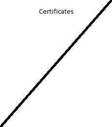

CERTIFICATIONS
Photography.
Since young, I have always been fascinated by the world of photography. The placement of every tiny detail in a photo would thrill me. I believed that the meaning of my life was photograhpy so, i seized every chance i had to go for photography courses. This one is achieved at a young age of primary 3.
Computer Skills.
Apart from photography, i had one other interest. It was computers. My attention was always drawn in to anything computer related. Each time my father opened up a CPU, I was always the most excited. This pushed me to participate in various international assesments for computer skills. I am actually very proud of this one. It signifies that I scored in the top 10% of the whole sinagpore!
EXPERIENCES
Designed a company logo.
Over the vacation, I was reccomended to create a company logo for a start up company by word of mouth. The company specialized in a variety of electronic, hence they asked for the logo to be abstract. It was a good experience communicating with the company to achieve what they were looking for.
Fairprice
Over my secondary 4 vacations, I went to the nearby supermarkets to look for a job. Fairprice was the one that hired me. I worked for approximately 6 months in the outlet, learning much more than what was offered in school. My teachers at the workplace was the women who worked there for decades, and what they taught was life lessons.
Battery powered car competition.
My talent for creating was brought to the school's attention, which gave me a chance to participate in an interschool competion. I spent a semester building and designing a battery powered motor car to compete with the rest of singapore. I participated in this competition for 2 consecutive years. In both years, I won an award. In the first year, the speed award for the fastest car. In the second, the award for the best design.